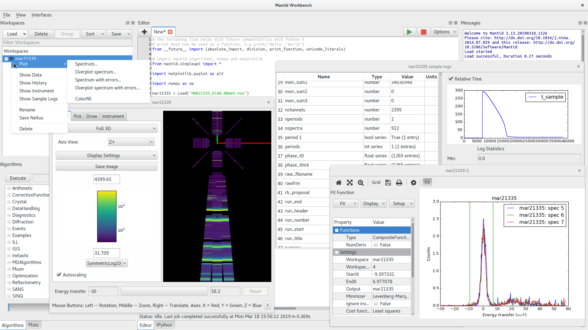

Workbench#
{kind=link}

Overview of the workbench#
Mantid Workbench is the newest user interface for Mantid and has replaced MantidPlot. The Workbench has been built from the ground up to be easier to use, more stable, support automatic testing and allow future development and changes to be completed much faster than they were in MantidPlot.
- What is in Workbench?
What is there in Workbench? This is a summary of what is in Workbench, including a diagram describing what is each aspect of the window.
Workbench’s smaller features A list of smaller features that does not warrant it’s own pages including keyboard shortcuts.
- Workbench Features
Main window menus: Overview of the top-level menus.
Settings: The control panel for settings in workbench.
Workspace Toolbox: The area in which all workspaces currently loaded into Workbench can be accessed and edited from.
Algorithm Toolbox: Shows a list of all of the algorithms available to users to run on the workspaces loaded into the Workspace Toolbox.
Workbench Script Window: Provides the ability to edit and execute Python scripts.
Script Repository: Provides interaction with a repository of user/community scripts.
Messages Window: Displays mantid log messages and Python output.
Plots Toolbox: A way of controlling all available plots.
IPython Console: Provides an IPython console allowing the immediate execution of Python commands.
Workbench Plotting: The way that plots are created and manipulated in Workbench, includes plot options and fitting.
Workspace data views: Display data from a MatrixWorkspace or TableWorkspace and edit TableWorkspaces.
Instrument Viewer Widget: Visualize an instrument attached to a workspace.
Sliceviewer: View 2D slices of multi-dimensional workspaces.
Sample log viewer: Display information, plots and statistics about the sample logs in a workspace.
Workspace History Window: Displays the algorithms that have been applied to a workspace.
Plotting: Describes how Mantid workspaces have been integrated with the matplotlib framework and how to create these plots via scripts.
Workspace Calculator: Describes, briefly, the workspace calculator plugin.
Superplot: Decorator widget of the plot window that provides tools to overplot data.